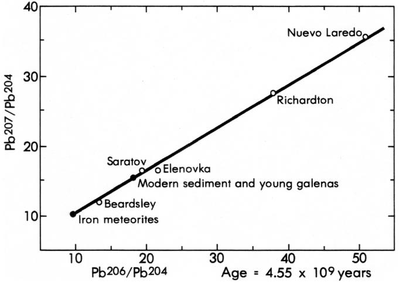

WISSENSCHAFTLICHE ALT DES ERDES
Bevor ich die von kreationistischen „Wissenschaftlern" vorgebrachten Argumente für eine sehr junge Erde analysiere, fasse ich hier kurz die Beweise zusammen, die Wissenschaftler davon überzeugt haben, dass die Erde 4,5 bis 4,6 Milliarden Jahre alt ist.
Es kann keinen Zweifel daran geben, dass die Erde ein hohes Alter hat; die Beweise sind reichlich vorhanden, schlüssig und für alle zugänglich, die sich dafür interessieren. Der beste Beweis ist in der unvollständigen, komplexen, aber genauen stratigraphischen Aufzeichnung der Erde enthalten — eine Aufzeichnung, die Gegenstand fast zweihundertjähriger Studien war. Langsam und mit großer Sorgfalt haben Geologen diese Aufzeichnung in die verallgemeinerte geologische Zeitskala zusammengetragen, die in Abbildung 1 dargestellt ist. Dies wurde erreicht, indem die relative Altersabfolge von Gesteinseinheiten in einem bestimmten Gebiet beobachtet und aus stratigraphischen Beziehungen bestimmt wurde, welche Gesteinseinheiten jünger, welche älter sind und welche Fossilienassemblagen in jeder Einheit enthalten sind. Durch die Verwendung von Fossilien zur Korrelation von Gebiet zu Gebiet waren Geologen in der Lage, eine relative weltweite Reihenfolge von Gesteinsformationen zu ermitteln und das Gesteinsarchiv sowie die geologische Zeit in die Epochen, Perioden und Zeitalter aufzuteilen, die in Abbildung 1 dargestellt sind. Die letzte Änderung der geologischen Zeitskala von Abbildung 1 erfolgte in den 1930er Jahren, bevor die radiometrische Datierung vollständig entwickelt war, als das Oligozän-Zeitalter zwischen dem Eozän und dem Miozän eingefügt wurde.
Obwohl frühe Stratigraphen die relative Reihenfolge von Gesteinseinheiten und Fossilien bestimmen konnten, konnten sie die Zeiträume nur schätzen, indem sie die Raten aktueller geologischer Prozesse beobachteten und die durch diese Prozesse entstandenen Gesteine mit denen verglichen, die im stratigraphischen Bericht erhalten sind. Mit der Entwicklung moderner radiometrischer Datierungsmethoden Ende der 1940er und 1950er Jahre wurde es erstmals möglich, nicht nur die Längen der Ären, Perioden und Epochen zu messen, sondern auch die relative Reihenfolge dieser geologischen Zeiteinheiten zu überprüfen. Die radiometrische Datierung bestätigte, dass die relative Zeitskala, die von Stratigraphen und Paläontologen (Abbildung 1) bestimmt wurde, absolut korrekt ist, ein Ergebnis, das nur erzielt werden konnte, wenn sowohl die relative Zeitskala als auch die radiometrischen Datierungsmethoden korrekt waren.
Die Fülle und Vielfalt der Fossilien in phanerozoischen Gesteinen haben es Geologen ermöglicht, die letzten etwa 600 Millionen Jahre der Erdgeschichte im großen Detail zu entschlüsseln. In präkambrischen Gesteinen sind Fossilien jedoch selten; daher war die geologische Aufzeichnung dieses wichtigen Teils der Erdgeschichte besonders schwierig zu entschlüsseln. Dennoch haben Stratigraphie und radiometrische Datierung präkambrischer Gesteine eindeutig gezeigt, dass die Geschichte der Erde sich Milliarden von Jahren in die Vergangenheit erstreckt.
Die radiometrische Datierung wurde nicht nur auf eine kleine Auswahl ausgewählter Gesteine aus dem geologischen Archiv angewendet. Tatsächlich sind in der wissenschaftlichen Literatur buchstäblich zehntausende radiometrische Altersmessungen dokumentiert. Seit Beginn des Betriebs Anfang der 1960er Jahre haben die Geochronologie-Labore des U.S. Geological Survey in Menlo Park, Kalifornien, allein mehr als 20.000 K-Ar, Rb-Sr und 14C-Altersbestimmungen erbracht. Wenn man zu dieser Zahl die Altersmessungen hinzufügt, die von 50 bis 100 weiteren Laboren weltweit durchgeführt wurden, wird deutlich, dass die Anzahl der über die letzten zwei bis drei Jahrzehnte erzeugten und in der wissenschaftlichen Literatur veröffentlichten radiometrischen Altersbestimmungen leicht 100.000 übersteigen muss. Insgesamt beweisen diese Daten eindeutig, dass die Geschichte der Erde sich vom gegenwärtigen Zeitpunkt bis mindestens 3,8 Milliarden Jahre in die Vergangenheit erstreckt.
Eine besonders faszinierende Frage zur Geschichte der Erde lautet: „Wann begann die Erde?" Die Antwort auf diese Frage wurde durch radiometrische Datierung erbracht und ist nun auf wenige Prozent genau bekannt.
Drei grundlegende Ansätze werden verwendet, um das Alter der Erde zu bestimmen. Der erste besteht darin, die ältesten an der Erdoberfläche freiliegenden Gesteine zu suchen und zu datieren. Diese ältesten Gesteine sind metamorphe Gesteine mit früheren, aber nun ausgelöschten Geschichten, sodass die so ermittelten Altersangaben Mindestalter für die Erde darstellen. Da die Erde als Teil des Sonnensystems entstand, ist ein zweiter Ansatz die Datierung extraterrestrischer Objekte, d. h. Meteoriten und Proben vom Mond. Viele dieser Proben haben nicht so intensive und komplexe Geschichten wie die ältesten Erdgesteine durchlaufen und zeichnen häufig Ereignisse auf, die näher an oder gleich dem Zeitpunkt der Planetenentstehung liegen. Der dritte Ansatz und derjenige, den Wissenschaftler für den genauesten Alterswert für die Erde, die anderen Planeten und das Sonnensystem halten, besteht darin, Modellbleialter für die Erde, den Mond und Meteoriten zu bestimmen. Diese Methode wird als Repräsentation des Zeitpunkts angesehen, zu dem Bleiisotope zuletzt homogen im gesamten Sonnensystem verteilt waren und somit der Zeitpunkt, zu dem die planetaren Körper in diskrete chemische Systeme getrennt wurden. Die Ergebnisse dieser Methoden deuten darauf hin, dass die Erde, Meteoriten, der Mond und, durch Schlussfolgerung, das gesamte Sonnensystem 4,5 bis 4,6 Milliarden Jahre alt sind.
Bevor ich die Beweise für das Alter der Erde kurz überblicke, betone ich, dass die Entstehung des Sonnensystems und der Erde kein augenblickliches Ereignis war, sondern über einen endlichen Zeitraum stattfand, als Folge von Prozessen, die in Gang gesetzt wurden, als das Universum entstand. Es ist daher korrekter, von Formationsintervallen zu sprechen, anstatt von diskreten Altersangaben für das Sonnensystem und die Erde. Der gegenwärtige Stand der Forschung zeigt jedoch, dass diese Intervalle im Vergleich zur Zeitspanne, die seit der Entstehung des Sonnensystems vor etwa 4 bis 5 Milliarden Jahren vergangen ist, relativ kurz waren (100-200 Millionen Jahre). Daher repräsentieren die Altersangaben der Erde, des Mondes und der Meteoriten, wie sie mit unterschiedlichen Methoden gemessen wurden, leicht unterschiedliche Ereignisse, obwohl die Unterschiede in diesen Altersangaben im Allgemeinen gering sind und sie daher im Interesse dieses Kapitels als ein einziges Ereignis behandelt werden.
DER ÄLTESTE ERDESTEIN
Alle großen Kontinente enthalten einen Kern aus sehr alten Gesteinen, der von jüngeren Gesteinen umgeben ist. Diese Kerne, die als präkambrische Schilde bezeichnet werden, sind das, was von der ältesten Kruste der Erde übrig geblieben ist. Die Gesteine in diesen Schilden sind zum größten Teil metamorph, was bedeutet, dass sie durch große Hitze und Druck unter der Oberfläche von anderen Gesteinen in ihre heutige Form umgewandelt wurden; die meisten haben mehr als einen Metamorphoseprozess durchlaufen und haben sehr komplexe Geschichten hinter sich. Ein metamorpher Vorgang kann das scheinbare radiometrische Alter eines Gesteins verändern. Am häufigsten führt der Vorgang zum teilweisen oder vollständigen Verlust des radiogenen Tochterisotops, was zu einem reduzierten Alter führt. Nicht alle Metamorphosen löschen vollständig den radiometrischen Altersnachweis eines Gesteins aus, obwohl dies bei vielen der Fall ist. Daher sind die radiometrischen Altersbestimmungen, die aus diesen ältesten Gesteinen gewonnen werden, nicht notwendigerweise das Alter des ersten Ereignisses in der Geschichte des Gesteins. Darüber hinaus dringen viele der ältesten datierten Gesteine in noch ältere, aber nicht datierbare Gesteine ein. In allen Fällen liefern die gemessenen Altersbestimmungen lediglich ein Mindestalter für die Erde.
Bisher wurden Gesteine älter als 3,0 Milliarden Jahre in Nordamerika, Indien, Russland, Grönland, Australien und Afrika gefunden. Die ältesten Gesteine Nordamerikas, die in Minnesota entdeckt wurden, weisen ein U-Pb-Diskordanz-Alter von 3,56 Milliarden Jahren auf (Abbildung 5). Die bisher ältesten auf der Erde gefundenen Gesteine befinden sich in Grönland, Südafrika und Indien. Die Grönland-Proben wurden besonders gut untersucht. Die Amitsoq-Gneise im westlichen Grönland wurden beispielsweise mit fünf verschiedenen Methoden datiert (Tabelle 6); innerhalb der analytischen Unsicherheiten sind die Alter identisch und deuten darauf hin, dass diese Gesteine etwa 3,7 Milliarden Jahre alt sind.
| gewichteter Mittelwert: 3,67 ± 0,06 | |
| Methode | Alter (Milliarden Jahre) |
|---|---|
| Rb - Sr Isokron | 3,70 ± 0,14 |
| Lu - Hf Isokron | 3,55 ± 0,22 |
| Pb - Pb Isokron | 3,80 ± 0,12 |
| U - Pb Diskordanz | 3,65 ± 0,05 |
| Th - Pb Diskordanz | 3,65 ± 0,08 |
Ganzgesteinsproben aus den Sand River Gneissen im Limpopo-Tal, Südafrika, wurden mit der Rb-Sr-Isokronen-Methode auf ein Alter von 3,79 ± 0,06 Milliarden Jahren datiert (15). Diese Proben stammen aus Gesteinen, die Einschlüsse von noch älteren, aber bisher nicht datierbaren Gesteinen enthalten. Kürzlich berichteten Basu und andere (16) über ein neunprobeniges Sm-Nd-Isokronenalter von 3,78 ± 0,11 Milliarden Jahren für Gesteine im östlichen Indien.
Studien der ältesten Gesteine aus den Präkambrium-Schilden zeigen, dass die Erde älter als 3,8 Milliarden Jahre ist. Die Geologie dieser ältesten Gesteine deutet auch darauf hin, dass es einen erheblichen Zeitraum der Erdgeschichte vor 3,8 Milliarden Jahren gab, für den es derzeit kein datierbares geologisches Archiv gibt. Es gibt mehrere mögliche Gründe für das scheinbare Fehlen dieses frühesten Aufzeichnungsbestandes. Ein Grund ist, dass während dieser Periode der Erdgeschichte nicht nur die erste kontinentale Kruste entstand, sondern sie auch intensiv recycelt und regeneriert wurde. Ein zweiter Grund ist, dass der Mond und, durch Schlussfolgerung, auch die Erde, von der Entstehung bis etwa vor 3,8 Milliarden Jahren intensiven Bombardements durch große Meteoriten ausgesetzt waren; dieses Bombardement ereignete sich, weil die Erde noch Material auf ihrer Umlaufbahn sammelte. Ein dritter Grund könnte sein, dass die Aufzeichnung der frühen Erdgeschichte irgendwo existiert, aber einfach noch nicht gefunden wurde. Der korrekte Grund für das Fehlen von Daten liegt möglicherweise in einer Kombination der oben genannten Faktoren. Unabhängig von den Gründen müssen wir, um mehr über die Erdgeschichte vor 3,8 Milliarden Jahren zu erfahren, die Beweise aus anderen, älteren Quellen untersuchen, insbesondere Meteoriten und den Mond.
ALTER DER METEORITE
Es gibt zwei grundlegende Typen von Meteoriten, Stein- und Eisenmeteoriten; andere Typen liegen in ihrer Zusammensetzung zwischen diesen beiden. Steinmeteoriten bestehen hauptsächlich aus den Silikatmineralen Olivin und Pyroxen, während Eisenmeteoriten hauptsächlich aus einer Nickel-Eisen-Legierung bestehen. Steinmeteoriten enthalten häufig kleine Mengen an Nickel-Eisen, und viele Eisenmeteorite enthalten kleine Mengen an Silikatmineralen. Meteoriten wurden einst als Überreste eines zerbrochenen Planeten angesehen, stammen aber wahrscheinlich von etwa 20 bis 70 verschiedenen Mutterkörpern der Größe großer Asteroiden. Einige Meteoriten sind Proben der Mutterkörper, die offensichtlich groß genug waren, um ein teilweises Schmelzen und eine Differenzierung zu durchlaufen, um verschiedene Gesteinstypen zu erzeugen. Andere, hauptsächlich die als Chondrite bezeichneten Steinmeteoriten, scheinen Gesteine darzustellen, die seit der Kondensation aus der Sonnenebene im Wesentlichen unverändert geblieben sind. Die Bahnen der Meteoriten deuten darauf hin, dass sie Teile des Sonnensystems sind, wahrscheinlich Proben der Asteroiden, und somit, dass ihr Alter für das Alter der Erde relevant ist.
Wie die meisten Dinge in der Natur sind Meteorite keine einfachen Objekte. Dies gilt besonders für jene, die einer Differenzierung, Erhitzung und Kollisionen mit anderen Himmelskörpern im Weltraum unterzogen wurden. Um das Alter des Sonnensystems und der Erde zu bestimmen, müssen wir nach den ältesten und am wenigsten gestörten Meteoriten suchen.
K-Ar-Alter von Steinmeteoriten reichen von etwa 400 Millionen Jahren bis fast 5 Milliarden Jahren, mit einer großen Konzentration bei 4,4 bis 4,6 Milliarden Jahren. Die jüngeren Alter reflektieren Erhitzungs- und Kollisionsereignisse, auf die die K-Ar-Methode besonders empfindlich ist, während die älteren Alter Ereignisse nahe oder gleich dem Zeitpunkt der Meteoritenbildung dokumentieren. Viele Meteoriten sind nun mit der 40Ar/39Ar-Alterspektrum-Methode datiert worden, die zeigt, dass viele Meteoriten nach ihrer Bildung erhitzt wurden. Die metallischen Phasen in Eisenmeteoriten können mit der K-Ar-Methode nicht zuverlässig datiert werden aufgrund ihres nahezu vernachlässigbaren Kaliumgehalts und kosmischer Strahlungseffekte. Silikat-Einschlüsse in mehreren Eisenmeteoriten wurden jedoch mit der K-Ar-Methode auf 4,5 ± 0,2 Milliarden Jahren datiert (19).
Einige der präzisesten Altersbestimmungen für Meteoriten wurden mit der Rb-Sr-Isochronen-Methode ermittelt. Tabelle 7 listet einige dieser Altersdaten auf, basierend auf der Zusammenfassung von Faure (49). Abbildung 3 zeigt die Isochronen für den Meteoriten Juvinas. Einige Eisenmeteorite, die kleine silikatische Einschlüsse enthalten, wurden ebenfalls mit der Rb-Sr-Isochronen-Methode datiert; die Ergebnisse deuten darauf hin, dass die am wenigsten gestörten Eisenmeteorite das gleiche Alter (4,6 Milliarden Jahre) aufweisen wie die am wenigsten gestörten Steinmeteoriten.
| ||||
| Material | Methode | Alter (Milliarden Jahre) |
||
|---|---|---|---|---|
| Juvinas (Akrondrit) | Mineralisokron | 4,60 ± 0,07 | ||
| Allende (kohlenstoffhaltiger Chondrit) | Mischisokron | 4,5–4,7 | ||
| Colomera (Silikat inklusion, Eisenmeteorit) | Mineralisokron | 4,61 ± 0,04 | ||
| Enstatit-Chondrite | Gesteinsisokron | 4,54 ± 0,13 | ||
| Enstatit-Chondrite | Mineralisokron | 4,56 ± 0,15 | ||
| Kohlenstoffhaltige Chon- drite | Gesteinsisokron | 4,69 ± 0,14 | ||
| Amphoterit-Chon- drite | Gesteinsisokron | 4,56 ± 0,15 | ||
| Bronzit-Chondrite | Gesteinsisokron | 4,69 ± 0,14 | ||
| Hypersthen-Chon- drite | Gesteinsisokron | 4,48 ± 0,1 | ||
| Krahenberg (Amphoter- it) | Mineralisokron | 4,70 ± 0,01 | ||
| Norton County (Achon- drit) | Mineralisokron | 4,7 ± 0,1 | ||
Meteoriten wurden auch mit der Sm-Nd-Isokronen-Methode datiert. Jacobsen und Wasserburg (69) haben beispielsweise gezeigt, dass 10 Chondrite und der Achondrit Juvinas alle auf einer Isokronenlinie von 4,6 Milliarden Jahren liegen.
Die Ergebnisse der radiometrischen Datierung von Meteoriten zeigen eindeutig, dass diese Objekte vor etwa 4,6 Milliarden Jahren entstanden sind. Da astrophysikalische Überlegungen erfordern, dass die Bildung der Planeten und Meteorite durch Kondensation aus der Sonnenecke im Wesentlichen gleichzeitig stattfand, können wir mit erheblicher Sicherheit darauf schließen, dass das Alter der primitivsten Meteorite auch das Entstehungsdatum der Erde ist. Selbst wenn wir diesen Schluss ablehnen wollten, wären wir dennoch gezwungen, zu dem Ergebnis zu kommen, dass Meteorite, die das Entstehen des Sonnensystems und des Universums mindestens überdauern müssen, nicht weniger als 4,6 Milliarden Jahre alt sind.
ALTER DER MONDSTEINE
Die Apollo-Missionen boten Wissenschaftlern erstmals die spannende Gelegenheit, Proben von einem anderen Planeten zu untersuchen. Obwohl alle Proben wichtige Informationen über die Geschichte des Mondes liefern, müssen wir uns für Daten zum Alter der Mondentstehung erneut an den ältesten Gesteinen orientieren.
Die Oberfläche des Mondes lässt sich in die Mondhochländer und die Mondmeere unterteilen. Die Hochländer sind gebirgige Hochlandbereiche, die noch einige Aspekte der ursprünglichen Einschlagmorphologie des frühesten Mondes bewahrt haben. Die Meere, oder „Meere", sind jüngere Tieflandbereiche, die nach dem Einschlag von Asteroidengrößenkörpern von Lava überflutet wurden. Die Apollo-Missionen brachten Proben sowohl aus den Hochländern als auch aus den Meeren zurück.
Wegen der starken Auswirkungen der Frühgeschichte des Mondes und der daraus resultierenden Erwärmung und Metamorphose von Mondproben ist die konventionelle K-Ar-Methode für die Untersuchung der Entstehung von Mondgestein nicht besonders geeignet, da sie dazu neigt, die jüngsten Erwärmungs- und Impakt-Ereignisse zu datieren, anstatt die ursprünglichen Gesteinsalter. Die Alter von Mondgesteinen sind vor allem aus 40Ar/39Ar-Altersspektren und Rb-Sr-Isochronen-Datierungen bekannt; Tabelle 8 listet einige dieser Alter auf. Wie aus dieser Tabelle ersichtlich ist, liefern die Gesteine von jedem Landeplatz mit beiden Methoden ähnliche Alter; diese Übereinstimmung kann kein bloßer Zufall sein, sondern muss die wahren Alter der Gesteine innerhalb der analytischen Unsicherheiten widerspiegeln. Tabelle 8 listet jedoch nur Daten auf, die vor 1974 gewonnen wurden; seitdem wurden ältere Gesteine aus den Mondhochländern analysiert.
Viele 40Ar/39Ar-Altersspektrum-Alter von Hochlandgesteinen liegen zwischen etwa 4,0 und 4,5 Milliarden Jahren. Die ältesten Alter wurden jedoch mit der Rb/Sr-Isokronen-Methode an Proben vom Apollo-17-Standort gemessen. Dazu gehören Mineral-Isokronen-Alter von 4,55 ± 0,1, 4,60 ± 0,1 und 4,43 ± 0,05 Milliarden Jahren für drei verschiedene Gesteinstypen. Zusätzlich haben 40Ar/39Ar-Altersspektrum-Analysen vom Apollo-16-Standort nun zwei Gesteine mit Alter von 4,47 und 4,42 Milliarden Jahren ergeben (siehe Zusammenfassung in 75), und Sm-Nd-Isokronen-Alter von 4,23 ± 0,05 und 4,34 ± 0,05 Milliarden Jahren wurden für zwei Apollo-17-Proben bestimmt (23).
| Ort | Alter (Milliarden Jahre) | Gesteinstyp | Probe | Methode |
|---|---|---|---|---|
| Apollo 14 – Hochland |
3.96 | Al-Basalt | 14053 | Rb-Sr |
| 3.95 | Al-Basalt | 14053 | 40Ar-39Ar | |
| 3.95 | Al-Basalt | 14321 | Rb-Sr | |
| Apollo 17 – Hochland | 3.83 | High-Ti-Basalt | 75055 | Rb-Sr |
| 3.82 | High-Ti-Basalt | 70035 | Rb-Sr | |
| 3.76 | High-Ti-Basalt | 75055 | 40Ar-39Ar | |
| 3.74 | High-Ti-Basalt | 75083 | 40Ar-39Ar | |
| Apollo 11 – Mare |
3.82 | Low-K-Basalt | 10062 | 40Ar-39Ar |
| 3.71 | Low-K-Basalt | 10044 | Rb-Sr | |
| 3.63 | Low-K-Basalt | 10058 | Rb-Sr | |
| 3.68 | High-K-Basalt | 10071 | Rb-Sr | |
| 3.63 | High-K-Basalt | 10057 | Rb-Sr | |
| 3.61 | High-K-Basalt | 10024 | Rb-Sr | |
| 3.59 | High-K-Basalt | 10017 | Rb-Sr | |
| 3.56 | High-K-Basalt | 10022 | 40Ar-39Ar | |
| Luna 16 – Hochland | 3.45 | Al-Basalt | B-1 | 40Ar-39Ar |
| 3.42 | Al-Basalt | B-1 | Rb-Sr | |
| Apollo 15 – Hochland | 3.44 | Quarz-Basalt | 15682 | Rb-Sr |
| 3.40 | Quarz-Basalt | 15085 | Rb-Sr | |
| 3.35 | Quarz-Basalt | 15117 | Rb-Sr | |
| 3.33 | Quarz-Basalt | 15076 | Rb-Sr | |
| 3.32 | Olivin-Basalt | 15555 | Rb-Sr | |
| 3.31 | Olivin-Basalt | 15555 | 40Ar-39Ar | |
| 3.26 | Quarz-Basalt | 15065 | Rb-Sr | |
| Apollo 12 – Mare | 3.36 | Olivin-Basalt | 12002 | Rb-Sr |
| 3.30 | Olivin-Basalt | 12063 | Rb-Sr | |
| 3.30 | Olivin-Basalt | 12040 | Rb-Sr | |
| 3.27 | Quarz-Basalt | 12051 | 40Ar-39Ar | |
| 3.26 | Quarz-Basalt | 12051 | Rb-Sr | |
| 3.24 | Olivin-Basalt | 12002 | 40Ar-39Ar | |
| 3.24 | Quarz-Basalt | 12065 | 40Ar-39Ar | |
| 3.18 | Quarz-Basalt | 12064 | Rb-Sr | |
| 3.16 | Quarz-Basalt | 12065 | Rb-Sr |
Die Hunderte von radiometrischen Altersbestimmungen an Mondgestein zeigen deutlich, dass die ursprüngliche Entstehung des Mondes vor 4,5 bis 4,6 Milliarden Jahren stattfand. Es gibt zwar gewisse Unsicherheiten bezüglich der genauen Chronologie und der Ereignisse, die zum heutigen Mond geführt haben, doch besteht kaum Zweifel darüber, wann der Mond entstand oder über das Datum der großen vulkanischen Ereignisse, die die magmatischen Gesteine an den verschiedenen Apollo-Standorten hervorbrachten.
MODELL DER LEITUNTERSCHEIDUNG VON METEORITEN UND DER ERDE
Das allgemein akzeptierte Alter der Erde basiert auf einem einfachen, aber eleganten Modell für die Evolution von Bleiisotopen. Dieses Modell wurde unabhängig voneinander von Houtermans (65) und Holmes (63) entwickelt und 1953 erstmals von Clair Patterson, damals am California Institute of Technology, auf Meteoriten und die Erde angewendet. In seinem klassischen Aufsatz schloss Patterson (104) aus, dass, wenn die Bleiisotopenzusammensetzung in der Sonnennebel gleichmäßig war und somit auch in den planetaren Körpern und Meteoriten zum Zeitpunkt ihrer Entstehung, und wenn diese Körper unterschiedliche Mengen Uran enthielten, dann sollte die Bleiisotopenzusammensetzung dieser Körper auf einer Geraden liegen, wenn das Verhältnis 207Pb/204Pb gegen das Verhältnis 206Pb/204Pb aufgetragen wird (Abbildung 8). Das untere Ende der Isokronen in Abbildung 8 repräsentiert die Bleiisotopenzusammensetzung in einer Phase von Eisenmeteoriten (Troilit oder Eisensulfid), die kein Uran enthält; dieser Punkt repräsentiert die anfängliche Bleiisotopenzusammensetzung des Sonnensystems.
|
 |
Die Blei-Isotopenzusammensetzungen von Eisen- und Steinmeteoriten fallen auf eine Isokronen-Altersbestimmung von 4,55 Milliarden Jahren (Abbildung 8). Beachten Sie, dass diese Methode, wie die anderen Isokronen-Methoden, sich selbst überprüfend ist. Die moderne Erde, wie sie durch die Blei-Isotopenzusammensetzungen einiger sehr junger, uranfreier Minerale repräsentiert wird, liegt ebenfalls nahe an der meteoritischen Isokronen,9 ein Ergebnis, das wir erwarten würden, wenn sich die Erde und die Meteoriten gleichzeitig bildeten. Die Verhältnisse in Mondgesteinen weisen deutlich größere Werte auf als in terrestrischen Gesteinen und Meteoriten; sie liegen außerhalb des Bereichs von Abbildung 8, liegen aber sehr nahe an der Verlängerung der meteoritischen Isokronen und deuten daher auf ein ähnliches Alter hin.
Falls die Erde, der Mond und Meteoriten nicht genetisch verwandt und gleich alt wären, gäbe es keinen Grund dafür, dass ihre Bleisotopenzusammensetzungen auf derselben Isokronen liegen. Dies ist überzeugender Beweis dafür, dass die Himmelskörper, einschließlich der Erde, vor etwa 4,55 Milliarden Jahren entstanden sind. Beachten Sie, dass Pattersons (104) ursprüngliche Schätzung des Alters der Erde sich in den letzten drei Jahrzehnten kaum verändert hat. In einer jüngeren Neubewertung kommt Tera (125) zu dem Schluss, dass das Alter der Erde etwa 4,54 Milliarden Jahre beträgt. Tera fasst zudem mehrere andere Blei-Modelle für das Alter der Erde zusammen; sie liefern alle Ergebnisse im Bereich von 4,43 bis 4,59 Milliarden Jahren. Somit wird zwar noch über das genaue Alter der Erde und des Sonnensystems diskutiert, doch streiten sich die Wissenschaftler nur über die ersten ein- oder zwei Zehntelmilliarden Jahre. Das Alter der Erde ist auf etwa einen Teil von 45 bekannt, d. h. etwa zwei Prozent.
9 Obwohl moderne Erdalter nahe der meteoritischen Isokron liegen, fallen viele nicht genau darauf, offensichtlich, weil viele komplexe (mehrstufige) Geschichten hinter sich haben (z. B. 123).